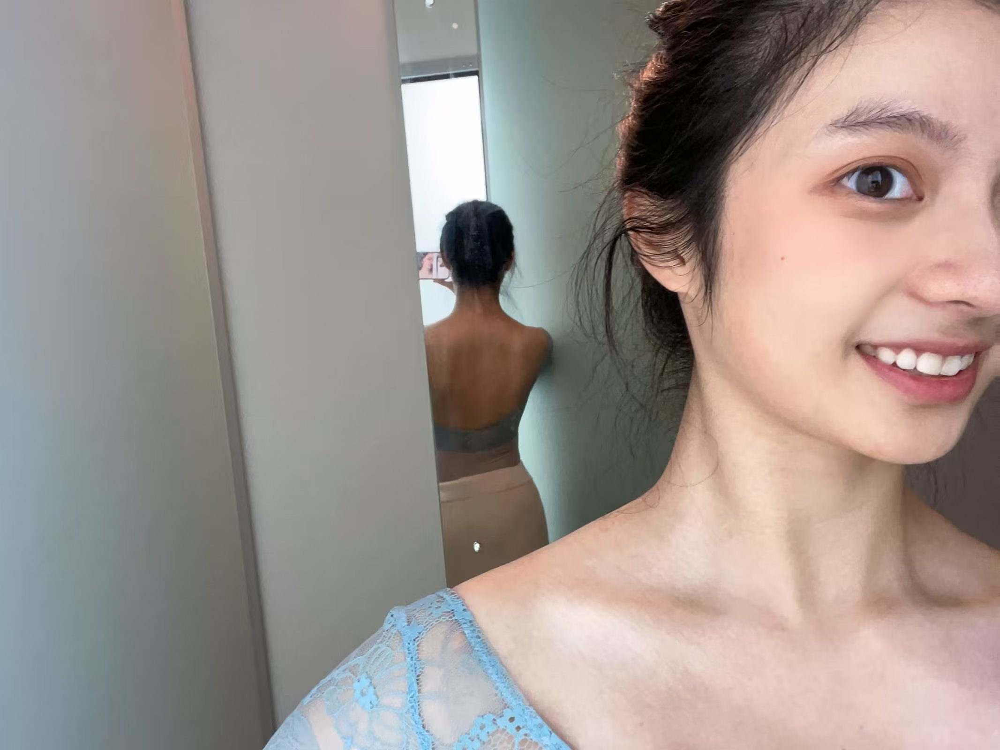
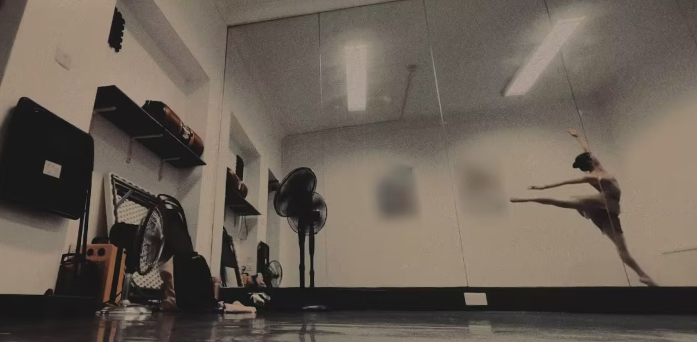

 Hello there! I'm Qiuye Zhang, an second-year AI & CS student at the University of Edinburgh. My enthusiasm for computational neuroscience and computational psychiatry runs deep, as I am passionate about understanding the intricacies of our brains and finding ways to address the various diseases that can affect them. As I continue to study, I am constantly training my internal model as well, trying to figure out the “values” of things in my life, and exploring uncertainities.
 Outside of my academic interests, I dance in both ballet and contemporary styles. In ballet, grace and elegance come from strength and energy. And contemporary allows me to express myself more freely.